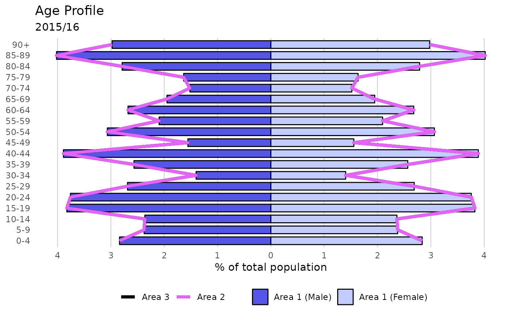

Plot population pyramid
Usage
population(
data,
value,
sex,
age,
area,
area_name,
comparator_1,
comparator_2,
title,
subtitle,
xlab
)Arguments
- data
data.frame or tibble which will be fed into ggplot functions. This object should contain the fields used for the arguments within this function
- value
unquoted field name for the field containing the population values for each age band
- sex
unquoted field name for the field containing sex variable
- age
unquoted field name for the field containing age band variable
- area
unquoted field name for the field containing the area names
- area_name
string; name of the area to display the bars for (this should exist in the field described by the area parameter)
- comparator_1
string; name of comparator area (this should exist in the field described by the area parameter)
- comparator_2
string; name of comparator area (this should exist in the field described by the area parameter)
- title
string; title of chart
- subtitle
string; subtitle of the chart
- xlab
string; x-axis title
See also
Other quick charts:
box_plots(),
compare_areas(),
compare_indicators(),
map(),
overview(),
trends()
Examples
library(dplyr)
agelevels <- c("0-4", "5-9","10-14","15-19",
"20-24","25-29","30-34",
"35-39","40-44","45-49",
"50-54","55-59","60-64",
"65-69","70-74","75-79",
"80-84","85-89","90+")
areas <- c("Area 1", "Area 2", "Area 3")
pops <- data.frame(Age = factor(rep(agelevels, length(areas) * 2),
levels = agelevels),
Value = rep(sample(1000:3000, length(agelevels), replace = TRUE),
length(areas) * 2),
Sex = rep(rep(c("Male", "Female"),
each = length(agelevels)), length(areas)),
AreaName = rep(areas, each = length(agelevels) * 2))
p <- population(pops,
value = Value,
sex = Sex,
age = Age,
area = AreaName,
area_name = "Area 1",
comparator_1 = "Area 3",
comparator_2 = "Area 2",
title = "Age Profile",
subtitle = "2015/16",
xlab = "% of total population")
p
